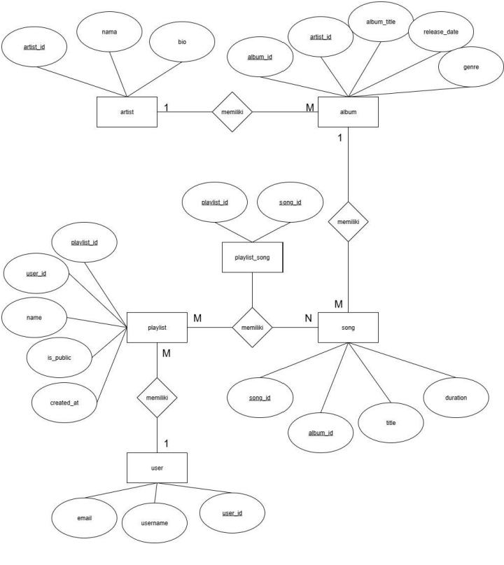
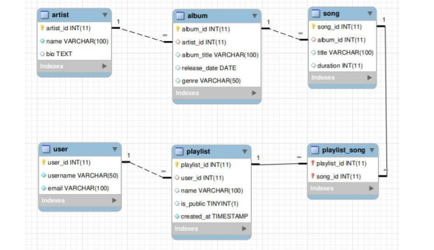
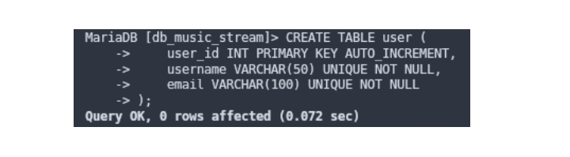
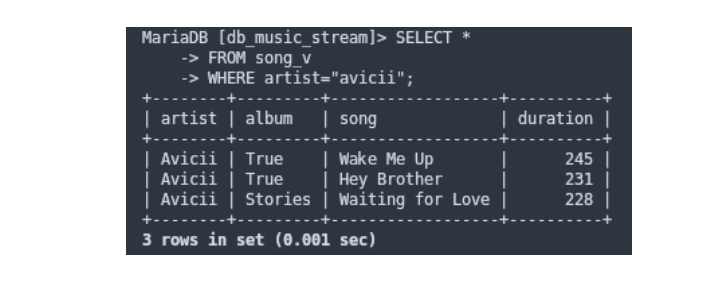
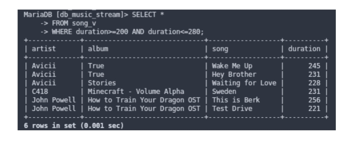
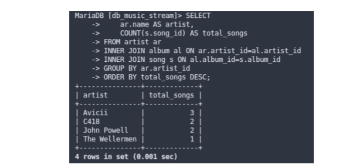
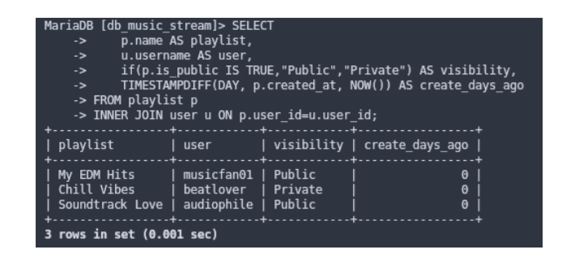
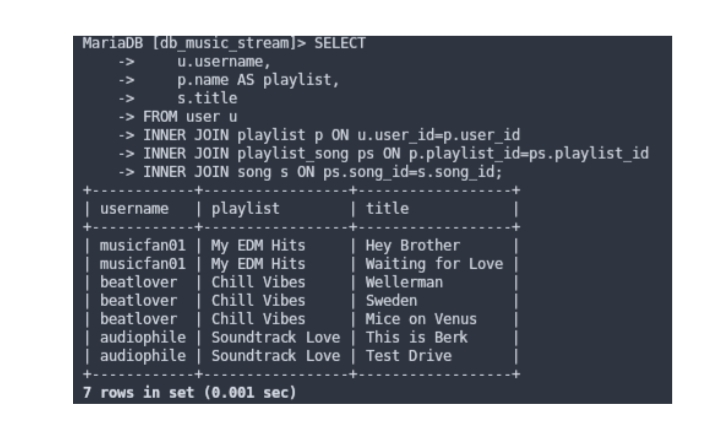

Database Design and SQL Implementation for a Music Streaming Platform
Music streaming platforms manage millions of songs, artists, albums, playlists, and user interactions every day. To support these operations efficiently, a well-structured database design is essential.
This project focuses on designing and implementing a relational database system for a Music Streaming Playlist Platform using MySQL. The database enables the management of users, artists, albums, songs, playlists, and playlist-song relationships while maintaining data integrity through primary and foreign key constraints.
Design a normalized relational database structure
Model relationships between users, artists, albums, songs, and playlists
Implement database tables using SQL with constraints
Perform Create, Read, Update, Delete operations
Create views and analytical queries for reporting
Apply primary key and foreign key constraints
| Module | Functionality |
|---|---|
| User Management | Store user information and manage playlist ownership |
| Artist Management | Store artist information and track songs and albums |
| Album Management | Manage album records and associate with artists |
| Song Management | Store song information and track duration |
| Playlist Management | Create public and private playlists |
| Playlist-Song Management | Many-to-many relationship between playlists and songs |
The database consists of six main tables:
| Table | Description |
|---|---|
| User | Stores user information |
| Artist | Stores artist information |
| Album | Stores album information |
| Song | Stores song information |
| Playlist | Stores playlist information |
| Playlist_Song | Junction table connecting playlists and songs |

Shows relationships between entities

Illustrates data flow within the system






Nico Alfianto
Information Systems Student | Data Analyst and Database Enthusiast
Project by Nico Alfianto | Database Design 2026